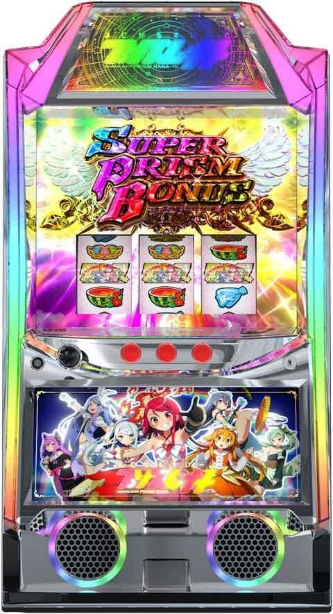
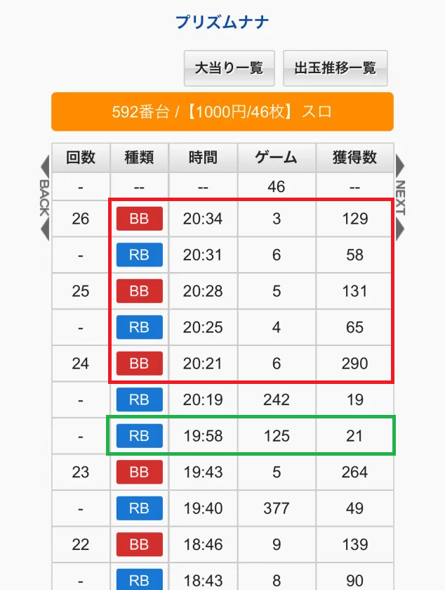
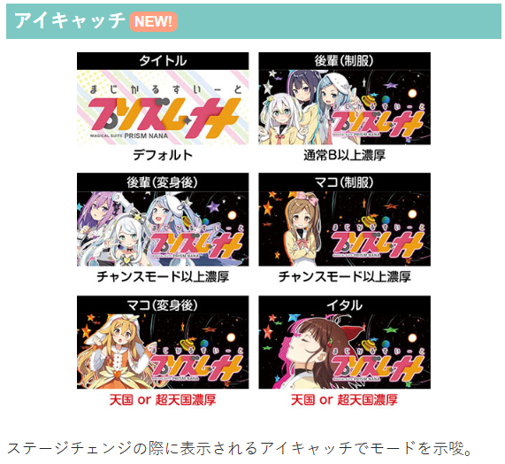
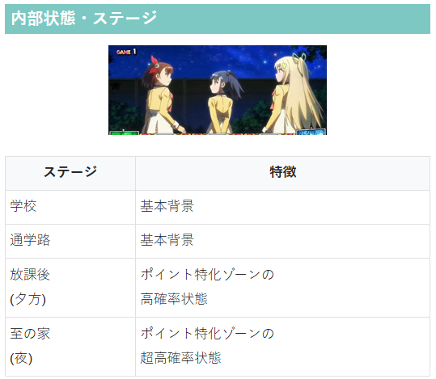
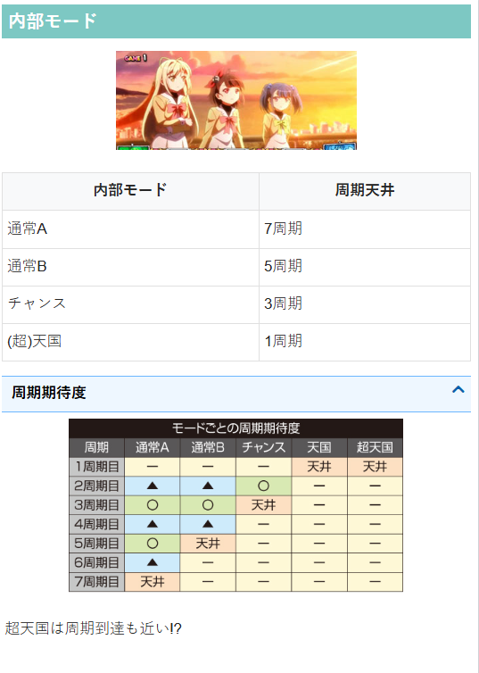
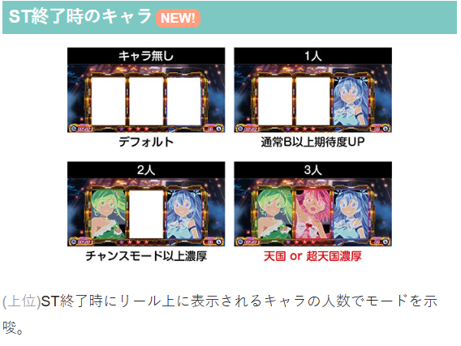

プリズムナナ

【天井情報】
通常時を899G＋α消化または最大7周期消化でSTに突入。
朝イチ設定変更時は天井が555G＋αに短縮。モードは通常B以上(最大5周期天井)となる。
駆け抜け時も天井が555G＋αに短縮。通常B以上(最大5周期天井)となる。
周期到達は最大600pt
マジカルカウンター最大50回
【リセット判別】
不明
【有利区間について】
不明
狙い目
【リセット狙い】
200G or 3周期目から
【ゲーム数天井狙い】
500G or 5周期目から
駆け抜け後 200G or 3周期目から
上位ST後 120G or 2周期目から
【上位ST後2から4回目狙い】
上位ST後のST（上位後2-4回目）はラストジャッジ当選率が上昇するためST性能が優遇される。
ただし、一度でもラストジャッジ突破していると優遇は無くなると思われる。継続する事もあり？
ラストジャッジ突破の確認方法
データ履歴から11Gか12Gで当選している履歴がラストジャッジ当選と思われる。9G以内はST中の当選。10Gは不明。
上位ST後の見抜き方
ST中に14回ボーナス当選すれば上位ST突入確定。初当たり含め15連以上していれば上位ST後となる。
データ機からも確認出来るが、筐体のメニューから履歴を確認した方が確実。
上位ST突入すると52.7％スーパープリズムボーナス（通常STは1.8％）。15連していなくてもメニューの履歴から立て続けにスーパープリズムボーナスに当選している様なら上位ST突入したと思われる。
狙い目
上位ST後2から4回目かつ、ラストジャッジ当選履歴無し 120Gから
上位ST後2から4回目かつ、ラストジャッジ当選履歴無しかつ、駆け抜け後 0Gから
【ゾーン狙い】
200ptゾーン 180ptから
400ptゾーン 380ptから
600pt（周期到達） 500ptから
【マジカルカウンター狙い】
46回から
10の倍数ごとにCZ抽選しているため1個手前からもゾーン狙い的に打てる？（例 9.19.29.39回目）
※マジカル目出現率 約1/44
※マジカルカウンターはST後も引き継がれる
【示唆関連の押し引きについて】
アイキャッチ、ST終了時のキャラ
天国以上濃厚 天国確認
チャンス以上濃厚 2周期目から？
プリプリゾーン発動準備中の表示あり
現状はプリプリゾーン消化まで打ち、その時点でのptで押し引き
【有利区間関連狙い】
不明
やめ時
ST後にヤメ 。
天国示唆やマジカルカウンターで打てる回数なら続行。
その他
データ履歴
赤枠はST中のボーナス
緑枠はST駆け抜けの履歴





参考元
かめとうさぎのパチスロブログ
基本情報
- メーカー: カルミナ
- 機械割: 97.7% 〜 114.9%
- 導入開始日: 2025年12月08日（月）
- ゲーム性概要: ●プリズムナナのパチスロ第3弾がスマスロで登場 ●通常時はポイント契機の周期抽選やマジカル目でSTを目指すゲーム性 ●ST中は目に見えるボーナス確率が面白い！ ●期待値約3000枚の上位ST搭載


打ち方
打ち方・小役
打ち方（小役狙い）
「最初に狙う絵柄」 左リール上段付近にBARを狙う。 スイカは取りこぼしがないので、中・右リールはフリー打ちでOKだ。
「レア役の停止例」
「押し順ナビ」 通常時の押し順ナビはマジカル目停止の可能性あり。
変則押しはNG
通常時・押し順ナビなし時は左リール第1停止での消化を推奨する。
解析情報通常時
小役関連
小役確率
| 役 | 確率 |
|---|---|
| リプレイ | 1/7.4 |
| 共通ベル（3枚） | 1/16.4 |
| 弱チェリー | 1/69.0 |
| 強チェリー | 1/546.1 |
| スイカ | 1/100.8 |
| 弱マジカル目 | 1/182.0 |
| 強マジカル目 | 1/546.1 |
※ レア役合算確率は1/29.8
マジカル目
通常時のマジカル目停止後は、液晶にマジカルリールが出現して報酬を獲得。マジカル目の停止回数によって獲得できる報酬の期待度が異なり、10の倍数回目は良い報酬獲得に期待できる（回数はリール右側に表示）。
マジカル目性能
| 確率 | 1/44.0 |
|---|---|
| 停止時の恩恵 | マジカルリール（液晶）をタッチして報酬を獲得 |
| 獲得報酬 | プリズムポイント加算、プリプリゾーン当選、 CZ当選、ST当選 |
| マジカル目回数 | 10の倍数ごとに上位報酬のチャンス、 最大の50回目は大チャンス |
［マジカルリール］ 液晶をタッチすると報酬が表示される。
［マジカル目10の倍数回目以外］報酬振り分け
| 報酬 | その他 | リプレイ | 押し順1枚 | |
|---|---|---|---|---|
| ポイント加算のみ | 96.09% | 85.94% | 85.94% | |
| ボーナス本前兆 | ー | ー | ー | |
| CZ本前兆 | 0.78% | 3.13% | 3.13% | |
| CZフェイク前兆 | 1.56% | 9.38% | 9.38% | |
| ボーナス直撃 | ー | ー | ー | |
| CZ直撃 | 0.78% | 0.78% | 0.78% | |
| プリプリゾーン直撃 | 0.78% | 0.78% | 0.78% | |
| 報酬 | 弱レア役 | 強チェリー | ||
| ポイント加算のみ | ー | ー | ||
| ボーナス本前兆 | ー | ー | ||
| CZ本前兆 | 50.00% | ー | ||
| CZフェイク前兆 | 25.00% | ー | ||
| ボーナス直撃 | ー | 50.00% | ||
| CZ直撃 | 25.00% | 50.00% | ||
| プリプリゾーン直撃 | ー | ー |
※弱レア役…弱チェリー・スイカ。マジカル目は出現しない（1枚ベルに変換）
［マジカル目10・20・30・40回目］報酬振り分け
| 報酬 | その他 | リプレイ | 押し順1枚 | |
|---|---|---|---|---|
| ポイント加算のみ | ー | ー | 85.94% | |
| ボーナス本前兆 | ー | ー | 1.56% | |
| CZ本前兆 | 17.19% | 17.19% | 12.50% | |
| CZフェイク前兆 | 71.09% | 71.09% | ー | |
| ボーナス直撃 | ー | ー | ー | |
| CZ直撃 | ー | ー | ー | |
| プリプリゾーン直撃 | 11.72% | 11.72% | ー | |
| 報酬 | 弱レア役 | 強チェリー | ||
| ポイント加算のみ | ー | ー | ||
| ボーナス本前兆 | ー | ー | ||
| CZ本前兆 | 81.25% | ー | ||
| CZフェイク前兆 | ー | ー | ||
| ボーナス直撃 | ー | 75.00% | ||
| CZ直撃 | 18.75% | 25.00% | ||
| プリプリゾーン直撃 | ー | ー |
※弱レア役…弱チェリー・スイカ。マジカル目は出現しない（1枚ベルに変換）
［マジカル目50回目］報酬振り分け
| 報酬 | その他 | リプレイ | 押し順1枚 | |
|---|---|---|---|---|
| ポイント加算のみ | ー | ー | ー | |
| ボーナス本前兆 | ー | 3.13% | 6.25% | |
| CZ本前兆 | 50.00% | 70.31% | 21.88% | |
| CZフェイク前兆 | ー | ー | ー | |
| ボーナス直撃 | 12.50% | 25.00% | 59.38% | |
| CZ直撃 | ー | 1.56% | 12.50% | |
| プリプリゾーン直撃 | 37.50% | ー | ー | |
| 報酬 | 弱レア役 | 強チェリー | ||
| ポイント加算のみ | ー | ー | ||
| ボーナス本前兆 | ー | ー | ||
| CZ本前兆 | ー | ー | ||
| CZフェイク前兆 | ー | ー | ||
| ボーナス直撃 | 100% | 100% | ||
| CZ直撃 | ー | ー | ||
| プリプリゾーン直撃 | ー | ー |
※弱レア役…弱チェリー・スイカ。マジカル目は出現しない（1枚ベルに変換）
マジカル目の成立回数とマジカルリール時の成立役に応じて報酬の振り分けが変化。
ただし、10の倍数回目以外でも、強マジカル目契機のマジカルリールは10・20・30・40回目と同じ振り分けで抽選される。
内部状態関連
通常時の内部状態
通常時は通常・高確・超高確の3種類の内部状態があって、レア役成立時のプリプリゾーン当選率が変化。 放課後ステージ（夕方）は高確示唆、イタルの家ステージ（夜）は超高確を示唆する。
内部状態移行率
| 役 | 通常→高確 | 通常→超高確 | 高確→超高確 |
|---|---|---|---|
| 弱レア役 | 18.75% | 1.56% | 25.00% |
| 強レア役 | 87.50% | 12.50% | 100% |
※弱レア役…弱チェリー・スイカ・弱マジカル目 強レア役…強チェリー・強マジカル目
強レア役は内部状態昇格濃厚だ。
モード
モードごとの天井周期
| モード | 天井周期 |
|---|---|
| 通常A | 7周期目 |
| 通常B | 5周期目 |
| チャンス | 3周期目 |
| 天国 | 1周期目 |
| 超天国 | 1周期目 |
設定変更時やバーニングゾーン駆け抜け時は通常B以上が選択されるため、5周期以内にATに当選。天井ゲーム数も555G＋αに短縮される。
モード＆周期別のST当選期待度
| 周期 | 通常A | 通常B | チャンス | 天国 | 超天国 |
|---|---|---|---|---|---|
| 1周期目 | ー | ー | ー | 天井 | 天井 |
| 2周期目 | △ | △ | 〇 | ー | ー |
| 3周期目 | 〇 | 〇 | 天井 | ー | ー |
| 4周期目 | △ | △ | ー | ー | ー |
| 5周期目 | 〇 | 天井 | ー | ー | ー |
| 6周期目 | △ | ー | ー | ー | ー |
| 7周期目 | 天井 | ー | ー | ー | ー |
［設定変更時］モード移行率
| モード | 移行率 |
|---|---|
| 通常A | ー |
| 通常B | 33.98% |
| チャンス | 15.63% |
| 天国 | 50.00% |
| 超天国 | 0.39% |
設定変更後は通常B以上濃厚で、1/2で天国が選択される。
プリズムポイント（周期抽選）
プリズムポイント
1Gにつき最低1ptずつポイント加算され、レア役は複数ポイント獲得濃厚。 200ptごとに前兆ステージ（スタードライブorミュージックステージ）移行の可能性があり、前兆ステージ突入で1周期消化。最大7周期目が天井となる。
規定ポイント振り分け
| ポイント | 1周期目 | 2～5周期目 | 6～7周期目 |
|---|---|---|---|
| 200pt | 34.38% | 44.53% | 44.53% |
| 400pt | 50.00% | 24.22% | 55.47% |
| 600pt | 15.63% | 31.25% | ー |
1周期目は約85%、2周期目は約70%が400ptまでに規定ポイントに到達。6・7周期目は400ptまでに必ず規定ポイントに到達する。
プリプリゾーン
プリプリゾーン概要
1セット8Gのプリズムポイント獲得特化ゾーン。前半の5Gは毎ゲーム5pt以上を必ず獲得、後半の3Gは成立役に応じた抽選でボスを撃破できればセットが継続する。 レア役のヒキも重要で、前半中ならポイント大量獲得に期待できるアイテム獲得のチャンス、後半中はボス撃破濃厚だ。
プリプリゾーン性能
| 当選契機 | おもにレア役での抽選 |
|---|---|
| 継続ゲーム数 | 1セット8G |
| 前半5G | 毎ゲーム5pt以上獲得、 レア役はアイテム獲得の期待大 |
| 後半3G | ボスを撃破できれば次セットへ継続、 レア役は撃破濃厚 |
| 突入確率 | 1/90.1 |
| 平均獲得ポイント | 93pt |
「アイテム」
アイテムの効果
| アイテム | 効果 |
|---|---|
| フレンド | 30pt以上獲得 |
| スピード | 継続率に漏れるまで毎ゲームポイントを獲得 ※ゲーム数減算ストップ |
| ウエポン | 3桁ポイント獲得濃厚 |
獲得する可能性のあるアイテムは3種類。
「ボス」 小役成立でボス撃破のチャンス、レア役は撃破濃厚だ。 ステージ1から順にボスを撃破していき、3セット目が継続（ステージ3のボスを撃破）すると、一旦プリプリゾーンは終了。ステージ3のボスを倒した次回のプリプリゾーンは、特殊ボス撃破でST当選になる特殊マップから始まる。
［特殊ボス］
特殊マップでボスを2回倒せばST当選！
プリプリゾーン当選率 通常滞在時
| 役 | 前兆もナシ | フェイク前兆 | 本前兆 |
|---|---|---|---|
| 弱レア役 | 50.00% | 25.00% | 25.00% |
| 強レア役 | ー | 37.50% | 62.50% |
高確滞在時
| 役 | 前兆もナシ | フェイク前兆 | 本前兆 |
|---|---|---|---|
| 弱レア役 | 18.75% | 31.25% | 50.00% |
| 強レア役 | ー | ー | 100% |
超高確滞在時
| 役 | 前兆もナシ | フェイク前兆 | 本前兆 |
|---|---|---|---|
| 弱レア役 | ー | 14.06% | 85.94% |
| 強レア役 | ー | ー | 100% |
※弱レア役…弱チェリー・スイカ・弱マジカル目 強レア役…強チェリー・強マジカル目
アイテム獲得率
| 役 | スピード | フレンド | ウエポン |
|---|---|---|---|
| リプレイ・ベル | 6.25% | 1.56% | 3.13% |
| 弱レア役 | 37.50% | 9.38% | 18.75% |
| 強レア役 | 12.50% | 50.00% | 25.00% |
※弱レア役…弱チェリー・スイカ・弱マジカル目 強レア役…強チェリー・強マジカル目
ボス撃破率
| 役 | 撃破率 |
|---|---|
| 下記以外 | 0.78% |
| リプレイ・ベル | 25.00% |
| レア役 | 100% |
特殊マップ移行率
| 前回のプリプリゾーン | 移行率 |
|---|---|
| 下記以外 | 1.56% |
| ステージ3のボスを撃破 | 100% |
ステージ3ボス撃破後にプリプリゾーン非当選のまま有利区間がリセットされた場合は、特殊マップ濃厚ではない。
周期前兆
周期前兆ステージ
「スタードライブ」 枠色が変わるほど本前兆期待度がアップ。
「ミュージックステージ」 基本的にフェイク前兆中のレア役はプリプリゾーンなどが抽選されるのだが、ミュージックステージ中はフェイク前兆だった場合でもレア役による本前兆書き換えに期待できる。
「ペカルのキャラ紹介」 前兆終了後はキャラ紹介でモードや次回以降の周期の期待度が示唆される。
フェイク前兆中・本前兆書き換え当選率
| 役 | 当選率 |
|---|---|
| リプレイ・ベル | ー |
| 弱レア役 | 50.00% |
| 強レア役 | 100% |
※弱レア役…弱チェリー・スイカ・弱マジカル目 強レア役…強チェリー・強マジカル目
本前兆中・STのボーナス確率アップ当選率
| 役 | 当選率 |
|---|---|
| リプレイ・ベル | 25.00% |
| 弱レア役 | 100% |
| 強レア役 | 100% |
※弱レア役…弱チェリー・スイカ・弱マジカル目 強レア役…強チェリー・強マジカル目
フェイク前兆の場合は本前兆への書き換えを抽選。本前兆だった場合はST中のボーナス確率アップが抽選される。
前兆種別ごとの前兆ステージ移行率 フェイク前兆時
| 周期 | スタードライブ | ミュージックステージ |
|---|---|---|
| 1周期目 | 95.31% | 4.69% |
| 2周期目 | 91.41% | 8.59% |
| 3周期目 | 95.31% | 4.69% |
| 4周期目 | 91.41% | 8.59% |
| 5周期目 | 95.31% | 4.69% |
| 6周期目 | 91.41% | 8.59% |
| 7周期目 | ー | ー |
本前兆時
| 周期 | スタードライブ | ミュージックステージ |
|---|---|---|
| 1周期目 | 99.22% | 0.78% |
| 2周期目 | 99.22% | 0.78% |
| 3周期目 | 99.22% | 0.78% |
| 4周期目 | 99.22% | 0.78% |
| 5周期目 | 99.22% | 0.78% |
| 6周期目 | 99.22% | 0.78% |
| 7周期目 | ー | 100% |
周期ポイントに到達時の前兆種別（本前兆orフェイク前兆）を参照して、スタードライブとミュージックステージのどちらへ移行するかを抽選。ミュージックステージはフェイク前兆時の移行率が高く、偶数周期だとさらに移行しやすい。 7周期目（天井周期）は必ずミュージックステージへ移行するので、ST中のボーナス確率アップに期待できる。
ただし、ミュージックステージ移行抽選に受かった場合でも、見た目上はスタードライブとなるケースあり（内部的な抽選はミュージックステージ）。
強く願えば必ず至る！（CZ）
CZ概要
小役入賞でオーラの色が昇格し、最終的なオーラの色で成功期待度が変化するCZ。レア役は2段階以上昇格濃厚だ。 期待度が約87%の上位版「超強く願えば必ず至る！」も存在する。
CZ性能
| 当選契機 | おもにマジカル目での抽選 |
|---|---|
| 継続ゲーム数 | 7G |
| 消化中の抽選 | 小役でオーラの色が昇格するほど期待度アップ、 レア役は2段階以上昇格濃厚 |
| 最終ゲーム | レア役成立で成功濃厚 |
| 成功期待度 | 約41%（超は約87%） |
CZ種別振り分け
| 種別 | 振り分け |
|---|---|
| 強く願えば必ず至る！ | 97.66% |
| 超強く願えば必ず至る！ | 2.34% |
「オーラ昇格」 オーラの色は白＜青＜黄＜緑＜赤＜金の6種類。
「超強く願えば必ず至る！」 初期のオーラが緑から始まるので、成功期待度が高い。
フリーズ
ロングフリーズ動画
通常時、リールロック3段階目到達でロングフリーズが発生。ライトニングゾーン（上位AT）直行のプレミアムフラグだ。
ロングフリーズ性能
| 確率 | 約1/163089（設定1） |
|---|---|
| 恩恵 | ライトニングゾーン（上位ST）直行 |
リールロック3段階目到達でロングフリーズが発生！
解析情報ボーナス時
バーニングゾーン（ST）
ST概要
7G間のST。1Gごとのボーナス確率が目に見えているのがポイントで、ボーナス確率はボーナス消化中に育てることができる。 ボーナス7連で上位CZのライトニングジャッジメントの権利を獲得、14連すると上位STを獲得する。
ST性能
| 当選契機 | 規定周期到達時、CZ成功時 |
|---|---|
| 規定ゲーム数 | 7G＋ラストジャッジ |
| ボーナス確率 | 約1/9～約1/2 |
| 平均継続率 | 約80%（初回ST突破後） |
| 1回目のボーナス | スーパープリズムボーナス濃厚 |
| ボーナス7連時 | 上位CZの権利獲得 |
| ボーナス14連時 | 上位STの権利獲得 |
ST1回目のボーナスはスーパープリズムボーナス濃厚。ボーナス確率を育てやすいため、次回以降のST継続率が高くなる。
「告知タイプ」 ST開始時に3種類からボーナスの告知タイプを選択できる。
「1Gごとのボーナス確率」 リール左右に1Gごとのボーナス確率が表示されていて、毎ゲーム表示された確率でボーナスを抽選。ボーナスに当選した場合、そのマスよりも後ろの確率は育ったまま。消化したマスのボーナス確率は初期の1/9に戻る。
上画像で説明すると、4マス目（左下の1/3のマス）でボーナスを引いた場合、1〜4マス目までの確率はリセットされて1/9からボーナス中に育て直し。5マス目以降の確率はそのまま保持される。
「ラストジャッジ」 7Gを消化するとラストジャッジが発生。敵を殲滅できればボーナス濃厚だ。
「上位CZの権利獲得と上位ST直行」 ボーナスが7連すると上位CZの権利を獲得するが、上位CZへ移行するのはST終了時。上位CZの権利を獲得した状態でボーナスが7連（トータル14連）すると、上位CZを経由することなく上位STを獲得できる。
［ST1～7G目］ボーナス当選率
| ボーナス確率 | レア役以外 | レア役 |
|---|---|---|
| 1/9 | 7.81% | 100% |
| 1/8 | 9.38% | 100% |
| 1/7 | 10.94% | 100% |
| 1/6 | 13.28% | 100% |
| 1/5 | 17.19% | 100% |
| 1/4 | 21.88% | 100% |
| 1/3 | 30.47% | 100% |
| 1/2 | 47.66% | 100% |
［ラストジャッジ中＆最終ゲーム］ボーナス当選率
| 役 | ラストジャッジ | 最終ゲーム |
|---|---|---|
| 弱レア役 | 50.00% | 100% |
| 強レア役 | 100% | 100% |
※弱レア役…弱チェリー・スイカ・弱マジカル目 強レア役…強チェリー・強マジカル目
ラストジャッジ中はレア役を引けばボーナスのチャンス。最終ゲームのレア役はボーナス濃厚だ。
ボーナス
ボーナス概要
ボーナスは獲得枚数の異なる3種類があり、いずれも消化中は成立役に応じてST中のボーナス確率アップを抽選。レア役はボーナス確率2段階以上アップ濃厚で、いきなりMAXの1/2まで昇格することもある。BAR揃い・リールロックによる確率アップやボーナス1G連抽選もアリ！
ボーナス性能
| 当選契機 | ST中の抽選 |
|---|---|
| 1Gあたりの純増 | 約7枚or約3枚 |
| 消化中の抽選 | ボーナス確率アップ抽選、1G連抽選 |
ボーナスごとの継続ゲーム数と純増
| ボーナス | 継続ゲーム数 | 純増 | 平均獲得枚数 |
|---|---|---|---|
| スーパープリズムボーナス （白7揃い） | 40G | 約7枚/G | 約280枚 |
| プリズムボーナス （赤7揃い） | 40G | 約3枚/G | 約120枚 |
| プリズムチャンス （BAR揃い） | 20G | 約3枚/G | 約60枚 |
「告知パターン」 チャンス告知・完全告知・後告知の3種類からボーナス確率アップの告知パターンを選択できる。
「内部状態でボーナス確率アップ期待度が変化」 ボーナス中には複数の内部状態があり、上位の状態ほどボーナス確率がアップしやすい。 高確中は液晶左右に帯が出現する。
「BAR揃い」 BARが揃えばボーナス確率が連続してアップするかも!?
「リールロック」 リールロック発生で全マスの確率がアップ！
「バトル演出」 レア役成立時は1G連も抽選していて、当否はバトル演出で告知される。
スペシャルボーナス
上位ST中のボーナス1G連時に突入する特殊なボーナス。 このボーナス中だけはボーナス確率アップではなく、ボーナスゲーム数の上乗せが抽選される。
スペシャルボーナス性能
| 当選契機 | 上位ST中のボーナス1G連時 |
|---|---|
| 継続ゲーム数 | 100G |
| 1Gあたりの純増 | 約7枚 |
| 消化中の抽選 | ボーナスゲーム数上乗せ抽選 |
| 平均獲得枚数 | 約800枚 |
「ボーナスゲーム数上乗せ」 1契機の最大上乗せゲーム数は100G。
ST中のボーナス確率アップ当選率
| 役 | 通常滞在時 | 高確滞在時 | 超高確滞在時 |
|---|---|---|---|
| リプレイ・ベル | 5.47% | 25.00% | 50.00% |
| 色目押しナビベル | 5.47% | 15.63% | 25.00% |
| 弱レア役 | 100% | 100% | 100% |
| 強レア役 | 100% | 100% | 100% |
※弱レア役…弱チェリー・スイカ・弱マジカル目 強レア役…強チェリー・強マジカル目
ボーナス確率アップ当選時・レベルアップ段階振り分け
| 段階 | リプレイ・ベル | 弱レア役 | 強レア役 |
|---|---|---|---|
| 1段階アップ | 100% | ー | ー |
| 2段階アップ | ー | 92.97% | ー |
| 3段階アップ | ー | ー | 75.00% |
| 7段階アップ | ー | 7.03% | 25.00% |
※弱レア役…弱チェリー・スイカ・弱マジカル目 強レア役…強チェリー・強マジカル目
内部状態と成立役を参照してボーナス確率アップを抽選。弱レア役は2段階アップorMAX、強レア役は3段階orMAXとなる。
ボーナス中のリールロック確率
リールロック発生で全マスのボーナス確率がアップする。
ボーナス種別振り分け
| ボーナス | ST中 | 上位ST中 |
|---|---|---|
| プリズムチャンス | 31.14% | 25.30% |
| プリズムボーナス | 67.09% | 22.01% |
| スーパープリズムボーナス | 1.77% | 52.69% |
スペシャルボーナス中のゲーム数上乗せ当選率
| 上乗せ | 弱レア役 | 強レア役 |
|---|---|---|
| 非当選 | 83.59% | ー |
| ＋10G | 12.50% | 84.38% |
| ＋30G | 1.56% | 6.25% |
| ＋50G | 1.56% | 6.25% |
| ＋100G | 0.78% | 3.13% |
強レア役は上乗せ濃厚。弱レア役は上乗せ非当選の場合、ST中のボーナス確率がアップする。
プリズムチャンス3連続時の特殊状態
バーニングゾーン中にプリズムチャンスが3連すると、3回目のプリズムチャンス中は1G連の当選率が大幅にアップした特殊状態へ移行。 プリズムチャンス中に1G連に当選しなかった場合、次のボーナスもプリズムチャンスなら再び特殊状態へ移行する。
特殊状態中の抽選まとめ
| リーチ目確率 | 1/21.7 （1G連当選濃厚） |
|---|---|
| 弱レア役・1G連当選率 | 25.00% |
| 強レア役・1G連当選率 | 75.00% |
※弱レア役…弱チェリー・スイカ・弱マジカル目 強レア役…強チェリー・強マジカル目
特殊状態はプリズムチャンス終了まで継続するので、複数ストックにも期待できる。
※（スーパー）プリズムボーナス当選orST終了で連続回数はリセット ※ライトニングゾーン中はプリズムチャンスが3連しても特殊状態へは移行しない
ライトニングジャッジメント（上位CZ）
上位CZ概要
ボーナス7連以上後のST終了時に突入する、上位STをかけたCZ。3Gのガチ抽選で、レア役or赤7が揃えば上位ST突入濃厚だ。
上位CZ性能
| 当選契機 | ボーナス7連以上後のST終了時 |
|---|---|
| 継続ゲーム数 | 3G |
| 消化中の抽選 | レア役成立or赤7揃いで上位ATへ |
「狙えカットイン」 赤7が揃えば上位AT。カットイン発生時は揃う期待度も表示される。
ライトニングゾーン（上位ST）
上位ST概要
すべてのマスのボーナス確率が1/2から始まる上位ST。ゲームの流れは通常のSTと同様で、マスごとのボーナス確率でボーナスを抽選し、使用したマスはボーナス中の成立役に応じて確率を育てていくゲーム性だ。 ボーナス当選時のスーパープリズムボーナス（白7揃い）の割合が50%を超えているため、出玉増加のスピードも速く、ボーナス確率も育てやすい。
上位ST性能
| 当選契機 | 上位CZ成功後、通常STでボーナス14連後 |
|---|---|
| 継続ゲーム数 | 7G＋ラストジャッジ |
| ボーナス確率 | 約1/9～約1/2 |
| 平均継続率 | 約90% |
| 備考① | 突入時はすべてのマスがボーナス確率1/2 |
| 備考② | スーパープリズムボーナスの割合が50%以上 |
| 期待獲得枚数 | 約3000枚（※） |
※通常ST開始から上位ST終了までの総獲得枚数の平均値（設定1）
演出情報
通常時
ステージの示唆
| ステージ | 示唆 |
|---|---|
| 学校 | デフォルト |
| 通学路 | デフォルト |
| 放課後 | 高確示唆 |
| イタルの家 | 超高確示唆 |
［学校］
［通学路］
［放課後］
［イタルの家］
アイキャッチの示唆
| アイキャッチ | 示唆 |
|---|---|
| タイトルのみ | 示唆ナシ |
| 後輩制服 | 通常B以上濃厚 |
| 後輩変身後 | チャンス以上濃厚 |
| マコ制服 | チャンス以上濃厚 |
| マコ変身後 | 天国濃厚 |
| イタル | 天国濃厚 |
| 3人制服 | 超高確濃厚 |
基本的にアイキャッチはモード示唆だが、3人制服のみモードではなく超高確滞在を示唆する。
［タイトルのみ］
［後輩制服］
［後輩変身後］
［マコ制服］
［マコ変身後］
［イタル］
［3人制服］
ペカルのキャラ紹介のモード・周期の期待度示唆
前兆終了後に発生する演出。紹介されるキャラの種類でモードや当該周期の規定ポイントを示唆する。
キャラごとの示唆
| キャラ | 示唆 |
|---|---|
| 鷲岡 至/ヒートナナ | ● 規定400pt時に選択されやすい |
| 浅木 飛鳥/アースナナ | ● 規定600ptを否定 |
| 織部 琴音/アクアナナ | ● 規定200pt・600ptで選択されやすい |
| 乙輝 アル/トゥインクルナナ | ● 規定400pt時に選択されやすい ● 至よりも400pt以下の期待度が高い |
| 霧獅摩 ミク/ミストナナ | ● 規定600ptを否定 ● 飛鳥よりも200ptの期待度が高い |
| 羽飼 しるべ/スカイナナ | ● 規定200pt・600ptで選択されやすい ● 琴音よりも200ptの期待度が高い |
| 柊 マコ/ライトニングナナ | ● 残り2周期以内に天井到達 |
| 鷲岡博士 | ● 残り3周期以内に天井到達 |
| ランデルマン | ● 残り3周期以内に天井到達 ● 鷲岡博士よりも2周期以内の期待度が高い |
強く願えば必ず至る！（CZ）
オーラ色ごとの成功期待度
| 色 | 期待度 |
|---|---|
| 白 | 11.20% |
| 青 | 18.90% |
| 黄 | 34.20% |
| 緑 | 60.70% |
| 赤 | 84.00% |
| 金 | 100% |
（上位）ST
（上位）ST終了後のリールキャラ別モード示唆
| キャラ | 示唆 |
|---|---|
| 非出現 | 示唆ナシ |
| 1人 | 通常B以上に期待 |
| 2人 | チャンス以上濃厚 |
| 3人 | 天国以上濃厚 |
ST・上位ST共通で、終了画面のリール上に出現するキャラの人数で移行モードが示唆される。
［1人］
［2人］
［3人］
［シングルナビ・デカナビ・山盛りナビ］ ボーナス期待度
| 絵柄 | シングルナビ | デカナビ | 山盛りナビ |
|---|---|---|---|
| ブランク | 2.93% | 70.07% | 82.60% |
| リプレイ | 33.25% | 96.13% | 98.03% |
| ベル | 5.75% | 74.66% | 83.86% |
| スイカ | 100% | 100% | 100% |
| チェリー | 100% | 100% | 100% |
| マジカル目 | 100% | 100% | 100% |
※全ボーナス確率（1/9～1/2）のトータル期待度
［ダブルナビ］ボーナス期待度
| 絵柄 | 期待度 |
|---|---|
| ブランク/ブランク | 100% |
| ブランク/リプレイ | 0.81% |
| ブランク/ベル | 28.04% |
| ブランク/スイカ | 77.78% |
| ブランク/チェリー | 84.91% |
| ブランク/マジカル目 | 71.96% |
| リプレイ/ブランク | 83.76% |
| リプレイ/リプレイ | 100% |
| リプレイ/ベル | 6.38% |
| リプレイ/スイカ | 14.62% |
| リプレイ/チェリー | 21.58% |
| リプレイ/マジカル目 | 11.15% |
| ベル/ブランク | 8.50% |
| ベル/リプレイ | 23.68% |
| ベル/ベル | 100% |
| ベル/スイカ | 27.64% |
| ベル/チェリー | 38.05% |
| ベル/マジカル目 | 6.81% |
| スイカ/ブランク | 100% |
| スイカ/リプレイ | 100% |
| スイカ/ベル | 100% |
| スイカ/スイカ | 100% |
| スイカ/チェリー | 100% |
| スイカ/マジカル目 | 100% |
| チェリー/ブランク | 100% |
| チェリー/リプレイ | 100% |
| チェリー/ベル | 100% |
| チェリー/スイカ | 100% |
| チェリー/チェリー | 100% |
| チェリー/マジカル | 100% |
| マジカル目/ブランク | 100% |
| マジカル目/リプレイ | 100% |
| マジカル目/ベル | 100% |
| マジカル目/スイカ | 100% |
| マジカル目/チェリー | 100% |
| マジカル目/マジカル目 | 100% |
※全ボーナス確率（1/9～1/2）のトータル期待度
同じ絵柄のダブルナビや左にレア役が表示されるパターンはボーナス濃厚だ。
［シングルナビ］
［デカナビ］
［山盛りナビ］
［ダブルナビ］
登場パターン＆キャラ別・ボーナス期待度 ボーナス確率：1/9
| パターン | アクアナナ | アースナナ | ヒートナナ |
|---|---|---|---|
| デフォルト | 2.85% | 24.31% | 100% |
| タッチ | 100% | 100% | 100% |
| 2分割 | 4.22% | 32.51% | 100% |
| BARを狙え | 14.30% | 64.86% | 100% |
ボーナス確率：1/8
| パターン | アクアナナ | アースナナ | ヒートナナ |
|---|---|---|---|
| デフォルト | 3.20% | 25.37% | 100% |
| タッチ | 100% | 100% | 100% |
| 2分割 | 4.72% | 33.77% | 100% |
| BARを狙え | 16.34% | 67.01% | 100% |
ボーナス確率：1/7
| パターン | アクアナナ | アースナナ | ヒートナナ |
|---|---|---|---|
| デフォルト | 3.68% | 25.03% | 100% |
| タッチ | 100% | 100% | 100% |
| 2分割 | 5.42% | 33.37% | 100% |
| BARを狙え | 18.87% | 67.58% | 100% |
ボーナス確率：1/6
| パターン | アクアナナ | アースナナ | ヒートナナ |
|---|---|---|---|
| デフォルト | 4.44% | 24.89% | 100% |
| タッチ | 100% | 100% | 100% |
| 2分割 | 6.52% | 33.20% | 100% |
| BARを狙え | 22.90% | 67.90% | 100% |
ボーナス確率：1/5
| パターン | アクアナナ | アースナナ | ヒートナナ |
|---|---|---|---|
| デフォルト | 19.68% | 6.44% | 66.11% |
| タッチ | 95.89% | 86.76% | 99.46% |
| 2分割 | 27.19% | 9.50% | 74.83% |
| BARを狙え | 63.67% | 32.00% | 92.43% |
ボーナス確率：1/4
| パターン | アクアナナ | アースナナ | ヒートナナ |
|---|---|---|---|
| デフォルト | 24.81% | 8.15% | 67.83% |
| タッチ | 96.92% | 89.42% | 99.50% |
| 2分割 | 33.46% | 11.92% | 76.27% |
| BARを狙え | 71.53% | 37.20% | 93.28% |
ボーナス確率：1/3
| パターン | アクアナナ | アースナナ | ヒートナナ |
|---|---|---|---|
| デフォルト | 33.39% | 11.89% | 68.11% |
| タッチ | 97.95% | 92.77% | 99.51% |
| 2分割 | 43.31% | 17.06% | 76.50% |
| BARを狙え | 78.62% | 48.91% | 94.19% |
ボーナス確率：1/2
| パターン | アクアナナ | アースナナ | ヒートナナ |
|---|---|---|---|
| デフォルト | 49.89% | 22.02% | 67.84% |
| タッチ | 98.96% | 96.41% | 99.50% |
| 2分割 | 60.28% | 30.09% | 76.27% |
| BARを狙え | 89.16% | 69.08% | 94.41% |
？マス時（ボーナス確率非表示時）
| パターン | アクアナナ | アースナナ | ヒートナナ |
|---|---|---|---|
| デフォルト | 2.07% | 13.95% | 66.78% |
| タッチ | 100% | 100% | 100% |
| 2分割 | 3.08% | 19.56% | 75.10% |
| BARを狙え | 11.72% | 49.52% | 92.75% |
バトルキャラの登場パターンで期待度が変化。ヒートナナは総じて期待度が高く、1/6以下で出現した場合はボーナス濃厚だ。
［デフォルト］ 対戦キャラ2人の名前が表示されるのがデフォルト。このデフォルト以外なら期待度アップとなる。
［タッチ］
［2分割］
［BARを狙え］
フリーズ発生時の演出パターン割合
| 演出 | 割合 |
|---|---|
| 非発生 | 50.84% |
| デカペカル | 2.60% |
| 3キャラ登場 | 5.20% |
| イッタレー | 2.60% |
| カウントダウン | 7.80% |
| ミニキャラ群 | 1.18% |
| 虹カットイン | 1.18% |
| リール前短冊 | 1.18% |
| リール前キャラ | 1.18% |
| ラブラブチュッチュッチュッ | 2.60% |
| スタート音ボイス | 2.60% |
| BGM停止 | 10.41% |
| 停止時ボイス | 7.80% |
| 筐体振動 | 1.41% |
| フリーズ中ボイス | 1.41% |
「ラブラブチュッチュッチュッ」〜「フリーズ中ボイス」はサウンド系の演出。
［デカペカル］
［3キャラ登場］
［イッタレー］
［カウントダウン］
［ミニキャラ群］
［虹カットイン］
［リール前短冊］
［リール前キャラ］
その他
搭載楽曲
ぷリズム♡たいむ～魔法の指でタッチして～
まじかるエンジン
白鷺流舞
hello，Dear my friends
萌って☆メルって★タッチしてっ！
Reach for the Beach
星空コネクション
ぷリズム♡ウィーク
T・H・N・P（とってもハロウィンナナパーティー！）
PRISMIX♪ ～Beachで白鷺エンジンFriendと萌ってメルってぷリズムたいむ～
流星ドリーマー
星空メモリアル
Sisterfood~シンクロフィール~
花とダイヤモンド
愛の[i]nfection
星空ハーモニー
星空リンカネーション
starry melody
YOUR PRISM ～Rainbow to the “NeXT” ～
QUEEN OF THE END
裏ボタン
プリプリゾーン終了時の隠しタッチ
プリプリゾーン終了時に液晶をタッチすると、ボイスでモードを示唆する。
ボイスごとの示唆
| ボイス | 示唆 |
|---|---|
| これからもよろしくね | デフォルト |
| そろそろ調子を上げていきますか | 通常B以上の期待度アップ |
| 悪者は宇宙の果てまでぶっとばしちゃうぞ | 通常B以上濃厚 |
| 気合いいれていくよ | チャンス以上濃厚 |
| 大好きだって言ってるんです | 当該周期でST当選濃厚 |
| 私をずっと守ってくれますか | 当該周期でST当選濃厚 |
| 私ね…君のこと…好き・・だよ | 当該周期でST当選濃厚 |